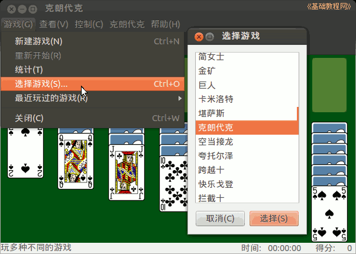
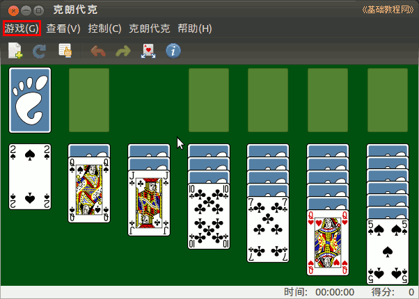
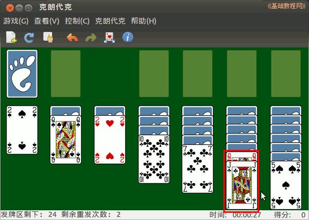
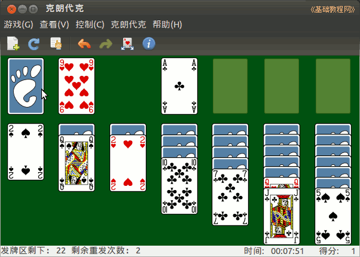
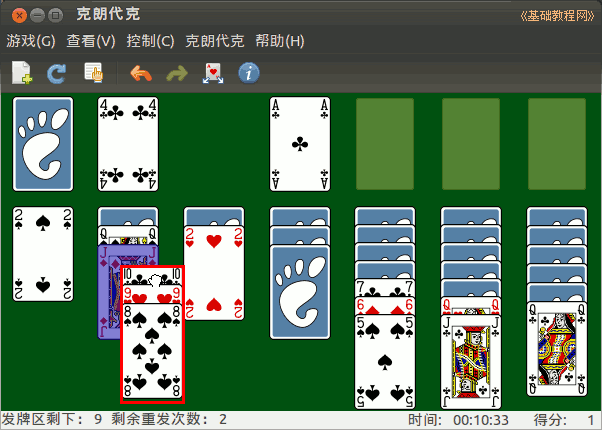
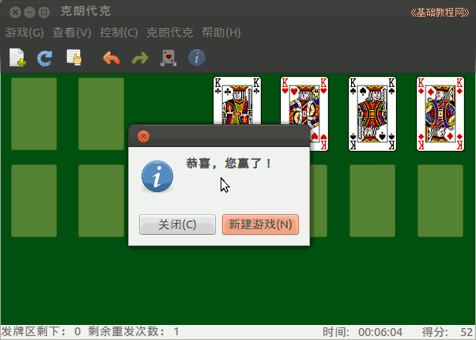

Ubuntu 入门操作指南
作者：TeliuTe 来源：基础教程网
八十八、纸牌王 返回目录 下一课纸牌王是一个红牌游戏集合，可以选择超过近百种牌戏；
1、纸牌王
1）点击左上角主按钮，在搜索中输入 zhi ，打开程序，或者依次点“主按钮、所有程序、过滤结果、游戏、纸牌王”；
2）默认的牌戏是克朗代克，点菜单“游戏－选择游戏”，可以选择其他游戏；

3）窗口中间是七摞牌，最下面一张是翻开的，上边是收牌区，左上角是发牌区；

4）玩牌的方法是，不同颜色按大小一张压一张，从 A 开始全部收到上边的就成功；

5）下边的牌移不动了，就点左上角的牌，K 可以移到下边的空档来；

6）可以移动一摞牌到相应的地方，新牌自动翻开，按顺序收牌；

7）所有的牌都收回去就成功了，翻不动了就点菜单“游戏 - 重新开始”，或者“新建游戏”；

8）更多请参阅：http://teliute.org/linux/TeDianao/lesson7/lesson7.html；
本节学习了纸牌王的基础知识，如果你成功地完成了练习，请继续学习下一课内容；
本教程由86团学校TeliuTe制作|著作权所有
基础教程网：http://teliute.org/
美丽的校园……
转载和引用本站内容，请保留作者和本站链接。